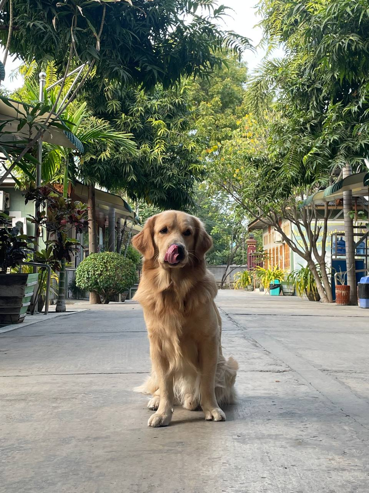

" Berry The Friendly Dog "
Berry The Friendly Dog is a cheerful 2-year-old male Golden Retriever and my friend's beloved pet. On this sunny day, his joyful spirit shone through as he played and frolicked, inspiring me to capture his happiness in photos. His playful demeanor and affectionate nature make every moment spent with him a delight.

